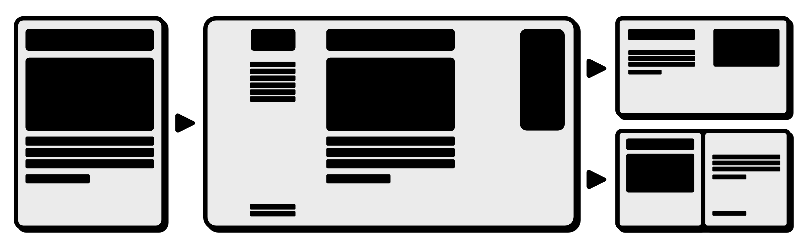

This is just the landing page for The CrossDocu Project. Which content will be shown here in future?
Haaaaaalo
Link zu einem GitHub Repo was ich doch nicht brauche

🌟 Die geheimnisvolle Reise des fliegenden Gurkens 🌟
Es war ein dunstiger Dienstagmorgen, als die Gurke Karl-Heinz plötzlich realisierte: „Ich will FLIEGEN!“ – nicht etwa, weil sie Flügel hatte (die hatte sie nicht), sondern weil sie im Kühlschrank einen verstaubten Prospekt für „Luftakrobatik für Gemüse“ gefunden hatte.
„Wer braucht schon Physik, wenn man Chuzpe hat?“ – Karl-Heinz’ Lebensmotto
Mit einem selbstgebastelten Katapult aus Joghurtbechern und Klebeband (das sie „Gurken-Gleiter 3000“ nannte) stürzte sie sich vom Küchenfenster – und landete direkt im Blumentopf der Nachbarin. „Das zählt als sanfte Landung!“ rief sie triumphierend, während die Nachbarin verwirrt ihre Kaktus-Sammlung umarmte.
Doch das Abenteuer war noch nicht vorbei! Plötzlich tauchte Herr Schnuffel, der sprechende Staubsauger, auf und flüsterte: „Psst… die Welt der vergessenen Socken braucht dich!“ Karl-Heinz zögerte – aber nur, weil sie gerade ihren imaginären Helm richten musste.
📜 Moral der Geschichte 📜
„Und wenn du das liest: Karl-Heinz fliegt jetzt mit einem Drachen aus Alufolie. Sie grüßt dich.“ 🥒✨
This is the "paged.njk" Layout.